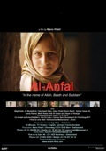

Films Dealing with Genocide in Iraq
Apart from being sectioned into documentaries and feature films, these listings are not yet organized, so until they are, please enjoy browsing!
"In a hard-hitting special report, award-winning journalist and filmmaker John Pilger investigates the effects of sanctions on the people of Iraq and finds that ten years of extraordinary isolation, imposed by the UN and enforced by the US and Britain, have killed more people than the two atomic bombs dropped on Japan. The UN Security Council imposed the sanctions and demanded the destruction of Saddam Hussein's chemical and biological weapons under the supervision of a UN Special Commission (UNSCOM). Iraq is permitted to sell a limited amount of oil in exchange for some food and medicine. Pilger takes the former Assistant Secretary-General of the United Nations, Denis Halliday, back to the crippled country for the first time since he resigned in protest over the sanctions back in September 1998. Together, they reveal an extraordinary portrait of life in a country with a decaying infrastructure and a population that Pilger says is being held hostage to the compliance of Saddam Hussein." (From site, http://www.bullfrogfilms.com/catalog/pay.html)
"Many Americans drive around with 'Support Our Troops' stickers affixed to their vehicles, and if Occupation: Dreamland is any indication, the men and women who are serving their country in Iraq could certainly use it. Filmed in early 2004, director-editor Ian Olds' documentary (for which he was given full access by the U.S. authorities) follows a group of soldiers from the Army's 82nd Airborne Division stationed in al-Falluja (also known as Falloujah), Iraq's 'city of mosques,' where their mission is to maintain the peace and root out insurgents, but their goal is simply to survive their tours of duty and go home. Many of these young men, a lot of them poor and under-educated, joined the military because they lacked viable career or life alternatives; once stationed in Iraq, they clearly wonder why they are there ('What exactly are we protecting?' asks one. 'I don't know'). Their daily lives, at least as depicted rather matter-of-factly by Olds, seem to consist of stretches of drudgery punctuated by occasional outbursts of gunfire and dangerous activity, along with meetings in which officers try to persuade them to re-enlist once their contracts expire. Although there are snipers and bombers around, we don't witness any casualties (filming was completed before the Marines laid bloody siege to al-Falluja in April of that same year). Instead, what we see is an uneasy co-existence between locals who don't want them there ... and soldiers who are duty-bound to fulfill their missions and understand why they are mistrusted, but have little sympathy for those they are supposed to help ('I hate these people,' mutters one). They may call their base of operations 'Dreamland' (it's actually an abandoned Ba'athist retreat), but for most of these guys, 'nightmare' might be more appropriate. (Sam Graham, from Adam Jones’ site)
In the Name of Honour
Documentary
2000
24 minutes
"It's autumn in the Kurdish region of northern Iraq -- and the wedding season is coming to an end. Marriage for most Kurdish brides promises freedom and respectability. But for others, it can bring isolation, cruelty and even death. This Life program explores how oppression of the minority Kurds in the disputed enclave of north Iraq has unleashed a chain of violence -- often directed at the weakest members of Kurdish society: its women. A former doctor, Nasik gave up her career to run a shelter for women living under threat of death from their families. 'Till now,' she says, 'hundreds of women have been killed in Iraqi Kurdistan simply because they fell in love, or because they demanded their basic rights -- such as the right to divorce or to be treated as a human being, to go outdoors, to be free to talk to other men." (From site,http://www.bullfrogfilms.com/catalog/lsinh.html)
Al-Anfal, in the name of Allah, Ba’ath and Saddam
July 2006
Directed by Mano Khalil
52 minutes
TV documentary
Kurdish / German / English / French
DIGI Beta
“Al-Anfal“ is the title of the eighth sura of the Koran. It revealed to the prophet Muhammad how the bounty, which the Muslims took in the war against the “unbelieving”, should bedivided among his followers. This referred to their families and their belongings, including women and children. The Iraqi dictator Saddam Hussein issued a decree in which he authorized his cousin Ali Hassan Al-Majid to wage war on the Kurdish people. In reference to the eighth sura of the Koran, he called this war „Al-Anfal”. The documentary Al-Anfal sheds light on a forgotten war, which Saddam Hussein waged against the Kurdish people in the years 1988 until 1991. Al-Anfal shows the methods Hussein and his Baath party used, and gives the victims a voice. The film documents the terror, which cost the lives of 182'000 Kurds, with extensive archive material. “We had to stand in a row and march. The soldiers walked next to us. There were two lieutenants, Mohammed and Abbas. When we arrived there, one of the lieutenants shouted in Arabic: “Stand still and turn around!" Simultaneously, he ordered his soldiers: “Shoot!" (says Karim Naiyef). The Baath regime in Iraq has disappeared; however, the regime of the sister-party remains in power in Syria.” (from site, http://mano.cms4people.de/42.html)
2006
89/91 minutes (U.K./U.S.)
Armenian, English
color
BBC
Screamers
"Documentary feature examining why genocides keep occurring -- from the Armenian genocide in 1915, to the Holocaust, Bosnia, Rwanda and now Darfur -- through the eyes and music of the Grammy award-winning rock band 'System of a Down,' based in Los Angeles, whose members are all grandchildren of genocide survivors. As the band tours the world and touches on the locations and stories of genocide in the last century, the film follows the personal story of the lead singer's grandfather, a 96-year old survivor of the Armenian genocide, one of the few remaining survivors from his village in Turkey. With the arguments of Harvard Professor Samantha Power, the personal stories of survivors from Armenia, Rwanda and Darfur, policy critics and whistleblowers –- the 'screamers' -- the film targets the problem of genocide denial, with specific reference to the Turkish government's current campaign to stop its citizens from discussing the genocide." (From the film's website)
Saddam’s Killing Fields
New Film about al-Anfal
Soheil Sokhanpazhuh
Documentary, News, Interviews
Feature presentations
“Iranian-born filmmaker, Soheil Sokhanpazhuh, has announced that he will produce a film about the Anfal atrocities. Sokhanpazhuh hopes to start shooting the film in the coming weeks on locations in Kurdistan where the atrocities took place. The Anfal campaigns, a systematic programme of ethnic cleansing, were carried out in 1988; the centrepiece of several years of genocidal warfare against the Kurds in Iraq. 180,000 Kurds perished in this genocide. Thousands of villages were destroyed. Hundreds of thousands of Kurds were forced to flee. The filmmaker says that he wants to show the film at international festivals, raise awareness about the Kurdish nation and about the tragedies of al-Anfal. Sokhanpazhuh, born in 1968, is a graduate of the Film Department at Tehran’s Academy of Fine Arts. He has participated in numerous Iranian and international film festivals. He produced and directed a film called ‘88’ about Halabja, where 5,000 Kurds were massacred in a chemical gas attack in 1988 by the Saddam regime.” (http://kurdistancommentary.wordpress.com/2010/07/19/new-film-to-be-made-about-al-anfal)
BBC TV, January 1992
PBS Frontline, March 31, 1992
Gwynne Roberts
Makiya's visit to northern Iraq also formed the basis for a report by the British film-maker Gwynne Roberts. . . (http://iraqshoahfiles.blogspot.com/2004/07/genocide-in-iraq-anfal-campaign.html)
Paying the Price: Killing the Children of Iraq
Documentary
2000
74 minutes
Directed by Alan Lowery
Produced by Carlton International
Produced, written and presented by John Pilger
Occupation: Dreamland
Documentary
2005
140 minutes



plot summaries & other information are from Amazon.com unless otherwise noted